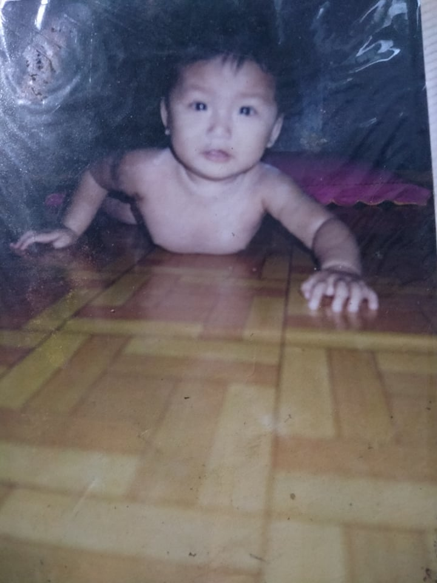
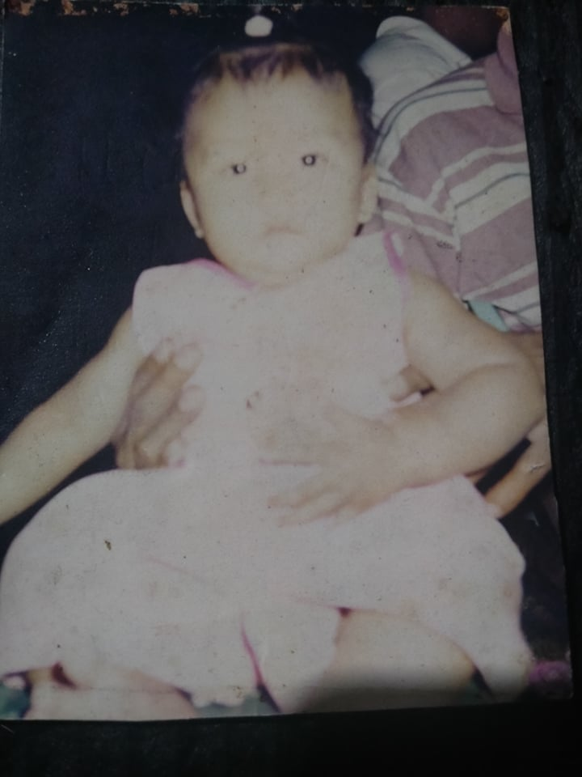
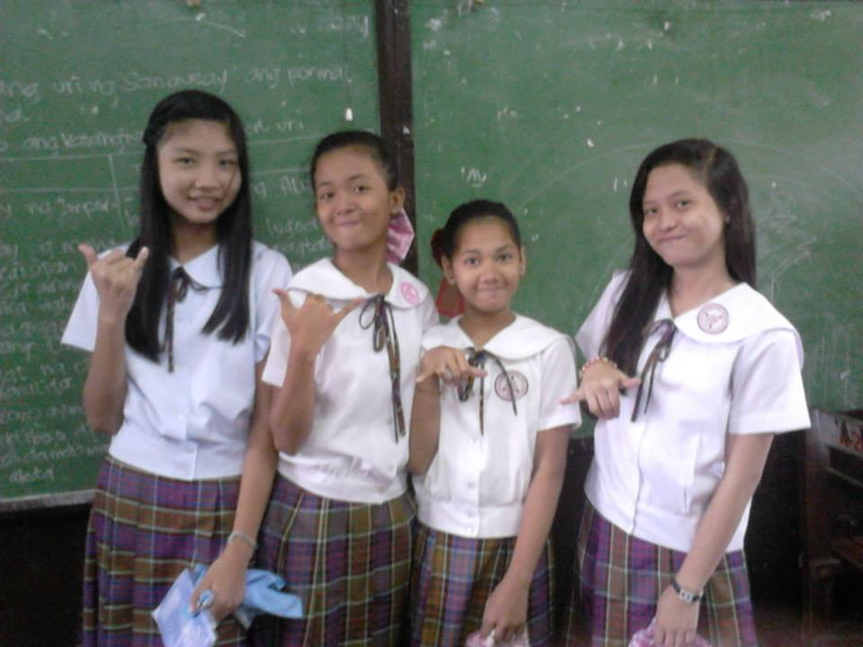
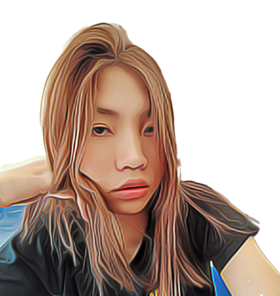
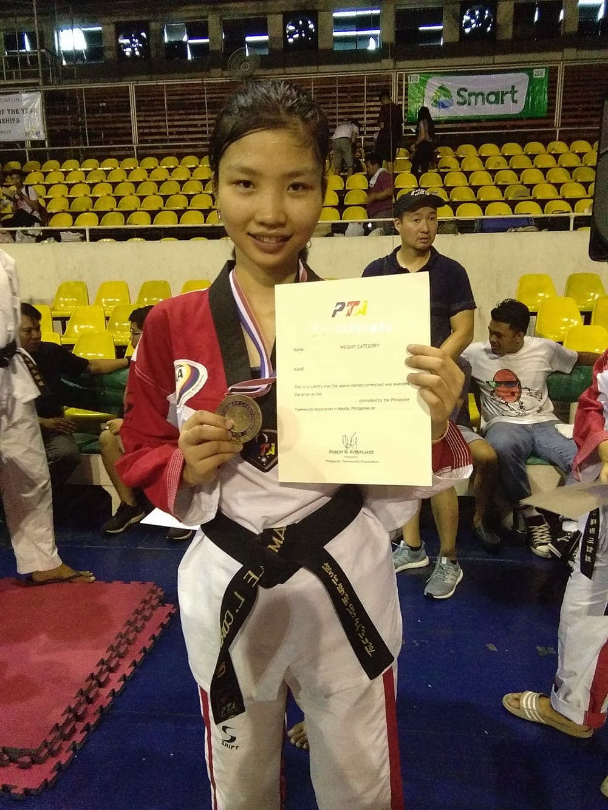
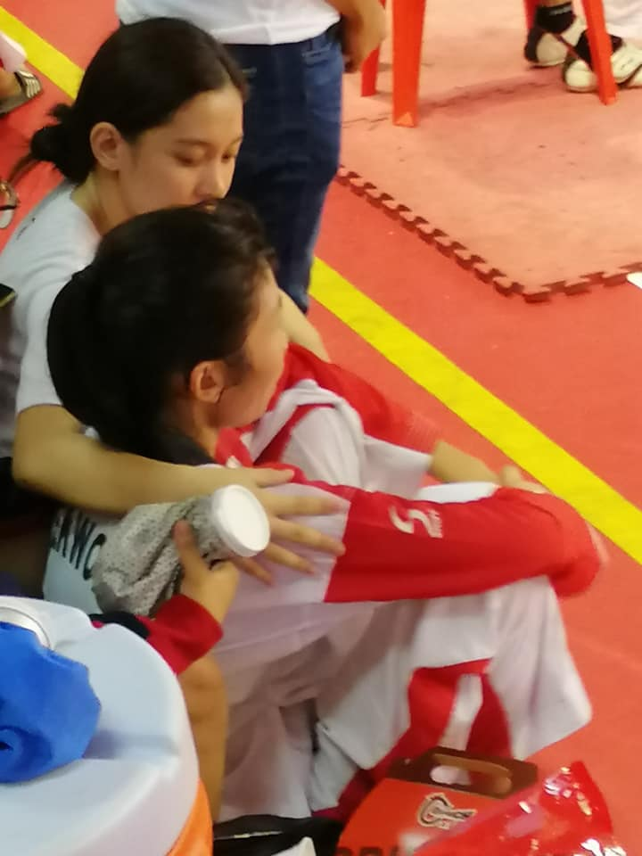
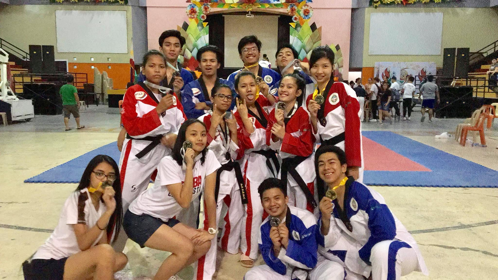

“Be happy for this moment. This moment is your life.”
HOME
Childhood Years

When I go back to my childhood, I get a warm and fuzzy feeling1. When I'm having a difficult day, I sit down and think about all those wonderful memories2. Reliving those days in my memory usually puts a smile on my face and makes me forget about my troubles,when I go back to my youth, I feel so happy and content3. My childhood years is not totally happy because my mom and my dad is separated4. But after the separating moment my mother took me to my grandparents in province5. I didn't spend time with her during those times6. The only thing I recognized as mama and papa were my grandparents at that time7. But my grandparents taught me not to be angry with them and everything has a reason8. My grandmother is my most favorite personality in this whole world. She used to make so many delicious dishes for me9.

I still remember that I used to run to my home in the middle of my play time just to eat food from her hands10. At night, she used to read me so many stories11. I can't even play that much because my grandparents' house is far away and mountainous11. At that time, but they gave me time to play12. The ones I played were non gun shooters and many more13. 7yrs old my first day in school14. The funniest memory of my childhood15. I cried a lot when my grandpa left me alone in the class16. I laid down in the classroom while crying loudly but then, my teacher gave me chocolates after which I stopped crying17. I made so many friends on my first day and enjoyed too18. I had many friends at school at that time, our hearts were free of negativity, we had no ego or attitude in our personality19. Even if we had a fight then after some time,my grandparents give me an unconditional love and they taught me a lot that would be good for me as I grew up.20
GO TOP
Teenage Years
When was a teenager, I was with my mom1. But it's not that easy because there is pressure attached to myself2. Since my grandparents were the only ones who took care of me during my childhood days3. My mom's wishes have prepressed me, especially in academia4. Maybe he really wants me to learn and graduate5. But in the part of being a teenager there I experienced how to cry, be embarrassed and fight with myself that my mom didn't know was fighting because I didn't want to be bullied6. Then I learned on my own because I knew that my mom was busy7. I learned how to keep up with the academies8. Then there I also see myself that I have a passion for this like sports.9
My teenage years thats where I see for myself my passion for sports first sports that I play is volleyball the next one is badminton but my favorite sports that I exceed my skills is taekwondo10. Then after that I can go to different places to play and fight to represent my city or my school11. My sports that I really love and continue is taekwondo I choose this because I love martial arts and also I see myself before that I don't want to bully anyone and I don't use it to bully anyone I know that12. I will learn more when it comes martial arts and I can defend myself and of course My mom13. The first venue and first competition are in the Pasig, my mom did not know that I competing in a far place he Hehe… 14 Some NCR place are I compete them15. After that my mom shock because I go to Davao and other provinces to compete and I know she is very proud of me of what achievements that I achieves16.

Those part of teenage years teach me17. How I build my confident and stand my own feet even if my mom against to my hubbies because she wants the good for me but I want to pursue that and I show to my mom that I can do it and I will do my best and I can handle both acads and sports18. And because of my passion for sports, it has helped me a lot I became a scholar and many took me out of school19. Many offer their various benefits for me,because of that I had a scholarship and was able to study in a private school20.
GO TOP
College Years

This is the part of starting of being adulting1. My first school was at colegio de San Juan de letran- manila until senior high school here I studied2. I also became an athlete here and had a scholarship3. My course here is also BSIT so, I thought of staying here even though University of the Philippines(UP) is taking me, my mom doesn't want to move because she sees that I'm tired from the trip because they didn't provide a dorm and it seems like the mess of the letter system for the athletes in Letran4.
In University of the Philippines(UP) I heard that when you were taken, you were actually sent to another school because at that time the coach was also a coach at another school5.

Then after that I was still a full scholar in Letran at that time so I choose to stay there6,wen I was just starting out as a college student7. At first nervous,next is I’m scared a bit if my second-choice course is right because my first choice is to be come a FLIGHT ATTENDANT but in letran they have no course8.

Because of the pandemic tested me there was a test that gave me the sting of my dream9. Each of my teamed receives an email and that's super bad news for us athletes10. We no longer have scholars who can be accepted, it depends if the situation in the country will be good again, it can be restored11. For me, I have lost hope that I can still study because I only rely on my scholar there12. I don't know how to tell to my mom,but something reopened an opportunity in my life13. The UE was the first on my try out list and I was accepted and given a full scholarship as well14. But I became an irregular student there,same course I still took BSIT15.

That time tested me again and that's what happened again16. Again another disbanded in my team it's like I've really lost hope because it's a pandemic, how can I continue my studies my mom's salary isn't that big either17. But I did not give up, I made a way to study again,first the solicit with my teamets but we still have enough next, I looked for a new school again but I thought it would only be a year before I could graduate because if I moved maybe another year18. My question to myself is when will this pandemic end19. But I also discovered a lot in online games like NFT games that can help and make money, I tried that and that was the solution because I was able to study again when it comes to my sports continue training still in my own self, I still believe that I can play agai20.
GO TOP